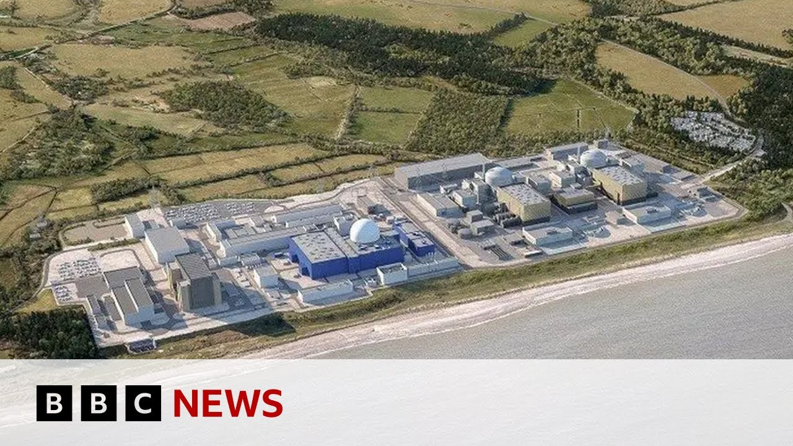

【英国承诺建造新核电站 | BBC新闻】
Summary: The UK government plans to invest £14.2 billion in a new nuclear power station in Suffolk, aiming to enhance energy security, reduce bills, and create 10,000 jobs over a decade, though critics question the project's transparency and cost.
摘要： 英国政府计划投资142亿英镑在萨福克郡建造一座新核电站，旨在提升能源安全、降低账单，并在十年内创造1万个就业机会，但批评者质疑该项目的透明度和成本。

⏱️ Estimated Reading Time: 4 min
📚 六级生词 📚 雅思生词 📚 托福生词 📚 专八生词 📚 SAT生词 📚 考研生词 📚 GRE生词 📚 高考生词 📚 视频里的生词
Now here, the prime minister says the government's decision to invest 14.2 billion pounds in a nuclear site in Suffukk will provide energy security, bring down bills, and create 10,000 jobs for a decade.
首相表示，政府决定在萨福克郡的核电站投资142亿英镑，将提供能源安全、降低账单，并在十年内创造1万个就业机会。
But opponents say he's not been clear about the final costs.
但反对者表示，他并未明确最终成本。
Here's our business editor, Simon Jack.
这是我们的商业编辑西蒙·杰克。
Nuclear energy has been produced here in Sidwell for nearly 60 years.
锡兹韦尔这里生产核能已有近60年历史。
Today, the chancellor will confirm she's setting aside money to build a new generation of reactors to generate energy for decades to come.
今天，财政大臣将确认她已拨出资金建造新一代反应堆，为未来几十年提供能源。
The plan is to take the design under construction at Hinckley Point in Somerset and replicate it on the Suffuk Coast, ushering in what the government describes as a golden age of nuclear to boost the UK's energy security.
该计划将采用萨默塞特郡欣克利角正在建设的设计，并在萨福克海岸复制，开启政府所称的“核能黄金时代”，以提升英国的能源安全。
Seizwell sees construction, it says, will create 10,000 direct jobs and once complete, will produce enough energy to power 6 million homes.
锡兹韦尔表示，建设将创造1万个直接就业机会，完成后将为600万户家庭提供足够能源。
The government has earmarked 14.2 billion pounds towards the cost over the next four years.
政府已为未来四年拨出142亿英镑用于该项目。
The prime minister said it would create well-paid careers for the students at this Ipsswitch college, but he's committed to a project that will cost tens of billions of pounds and take at least a decade, leading some to ask whether he's written a blank check on behalf of taxpayers and energy customers.
首相表示，这将为伊普斯威奇学院的学生创造高薪职业，但他承诺的项目将耗资数百亿英镑，并至少需要十年时间，引发一些人质疑他是否代表纳税人和能源用户开出了一张空白支票。
We're not writing a blank check.
我们并未开出空白支票。
We're setting out exactly uh the investment we're making.
我们明确列出了投资金额。
This is about investment.
这是关于投资。
Uh it carries with it 10 years worth of jobs for 10,000 people.
这将为1万人提供十年的就业机会。
Um and what it carries with it is our own energy independent security and bringing down uh the bills for millions of people across the country.
同时，它将带来我国的能源独立安全，并为全国数百万人降低账单。
The total budget is expected to be around4 billion pounds.
总预算预计约为40亿英镑。
One reason, but not the only one.
这是一个原因，但不是唯一原因。
Objectors say this will prove to be a costly mistake.
反对者表示，这将被证明是一个代价高昂的错误。
There is 14.2 billion pounds of taxpayers funding and that's a decision we condemn and firmly believe the government will come to regret.
142亿英镑的纳税人资金投入，这是我们谴责的决定，并坚信政府会后悔。
We don't see the benefit for voters uh in plowing more money into size will see that could be spent on other priorities and when the project will add to consumer bills during construction and is guaranteed to be late and over spent just like Hinckley PointC.
我们认为选民不会从向锡兹韦尔投入更多资金中受益，这些资金本可用于其他优先事项，且该项目在建设期间会增加消费者账单，并注定会像欣克利角C一样延期和超支。
Nuclear energy has been produced on this coast since the late 1960s.
自20世纪60年代末以来，该海岸一直在生产核能。
Nuclear as a whole contributed 15% of the UK's electricity needs last year, but in a few years time that will be the last functioning nuclear power station in Britain.
去年，核能占英国电力需求的15%，但几年后这将是英国最后一座运行的核电站。
The government's convinced it needs a new generation to produce domestic low-carbon always on energy as part of the future energy mix.
政府确信需要新一代核电站生产国内低碳、持续可用的能源，作为未来能源结构的一部分。
This government is not the first to declare a golden age for nuclear, and it'll be over a decade before the electricity produced is there at the flick of a.
本届政府并非首个宣布“核能黄金时代”的政府，而电力产出至少还需十年时间。